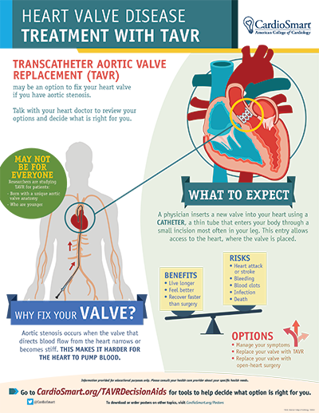

TAVR — Transcatheter Aortic Valve Replacement
TAVR is a minimally invasive way to replace a narrowed aortic valve (aortic stenosis) without open-heart surgery. Instead of opening the chest, a new valve is folded into a thin catheter and guided through a blood vessel, usually in the groin, up to the heart, where it is expanded to push the old, stiff valve leaflets aside and take over its job immediately.

Duration
1–2 hours
Fasting
No food or drink for 6–8 hours before
Sedation
Conscious sedation or general anesthesia
Recovery
Hospital stay of 1–3 days; back to light activity within days to a week
What Happens During the Procedure
TAVR is performed in a hospital's catheterization lab or hybrid operating room by a team that includes cardiologists and cardiac surgeons. Most patients receive conscious sedation (awake but relaxed and comfortable), though some receive general anesthesia depending on the approach and overall health. The access site, almost always an artery in the groin, is numbed and a catheter is inserted. Under X-ray and ultrasound (echocardiogram) guidance, the new valve — collapsed around a balloon or self-expanding frame — is threaded up to the heart and positioned precisely inside your own diseased aortic valve. It is then expanded, pushing your old valve leaflets out of the way, and the new valve begins working immediately. The catheter is removed and the small access site is closed, often without the need for stitches.
What the Patient Should Know
- No food or drink for 6–8 hours before the procedure, as directed by the hospital.
- You will have extensive testing beforehand (CT scan, echocardiogram, cardiac catheterization, bloodwork) to plan the exact valve size and approach.
- Tell the team about all medications, especially blood thinners, which may need to be adjusted beforehand.
- A heart team (cardiologists, cardiac surgeons, and other specialists) reviews each case to confirm TAVR is the right option compared with surgical valve replacement.
- Most patients stay in the hospital for monitoring for one to a few days afterward, including heart rhythm monitoring, since a new pacemaker is occasionally needed.
- You will need someone to help you at home for the first several days.
Recovery
Compared with open-heart surgery, TAVR recovery is notably faster. Most patients are up and walking within hours of the procedure and go home within one to three days. Mild soreness or bruising at the access site is common. Most people can resume light activities within days and are back to most normal activities within one to two weeks, though your care team will give you specific restrictions (such as avoiding heavy lifting) and a schedule for follow-up visits and imaging to confirm the new valve is working well.
Why It Is Done
- Treat severe, symptomatic aortic stenosis (a narrowed aortic valve) causing shortness of breath, chest pain, or fainting.
- Offered to patients at intermediate, high, or prohibitive risk for traditional open-heart valve surgery, and increasingly to lower-risk patients as well, based on heart team evaluation.
- Replace a failing surgical or TAVR valve from a prior procedure ("valve-in-valve").

Reliable Sources
- American College of Cardiology / CardioSmart, Choosing TAVR, Surgery, or Symptom Management
- CardioSmart, Heart Valve Disease: Treatment With TAVR — infographic
This page is for general education only and does not replace advice from your doctor. If you have questions about your own procedure, please contact the office.